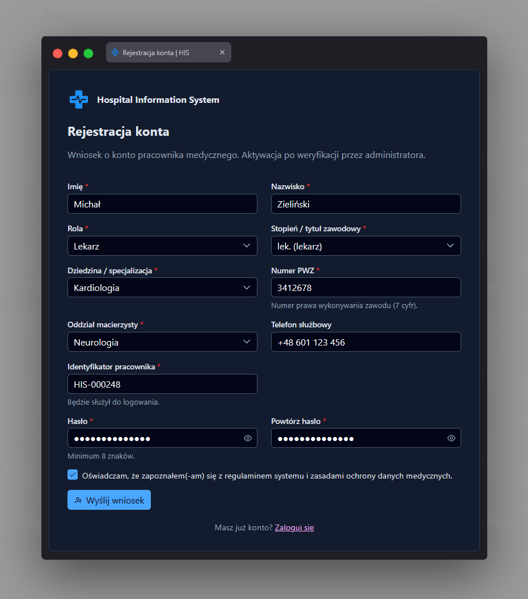

Rejestracja konta app-register-page
Ścieżka
Strona najwyższego poziomu (nie jest dzieckiem
AppShell), dostępna pod adresem
/register. Chroniona przez guestGuard,
co znaczy odwrotność authGuard - ekran jest osiągalny
tylko dla osoby NIEzalogowanej; zalogowany użytkownik zostanie
przekierowany, zanim zobaczy tę stronę. Jest to więc ekran
poprzedzający logowanie, analogiczny do ekranu logowania, a nie
podstrona panelu.
Przeznaczenie
Formularz wniosku o konto pracownika medycznego. Złożenie wniosku nie daje od razu dostępu do systemu - konto trafia ze statusem "oczekujące" i wymaga aktywacji przez administratora na stronie "Administracja personelem", zanim możliwe będzie zalogowanie.
Dane wejściowe
Formularz (reaktywny, FormBuilder) z polami:
- Imię i nazwisko - wymagane.
- Rola - wymagana, lista wyboru (domyślnie "lekarz").
- Stopień / tytuł zawodowy - wymagany, lista wyboru.
- Dziedzina / specjalizacja - wymagana, lista wyboru z filtrowaniem.
- Numer PWZ - wymagany, walidowany dedykowanym walidatorem (7 cyfr).
-
Oddział macierzysty - wymagany, lista wyboru zasilana ze
słownika oddziałów
(
AuthService.getRegisterWards()); w razie błędu pobierania lista jest pusta i pod polem pojawia się komunikat "Nie udało się pobrać listy oddziałów. Spróbuj ponownie później." - Telefon służbowy - opcjonalny, walidowany dedykowanym walidatorem formatu telefonu.
- Identyfikator pracownika - wymagany, walidowany dedykowanym walidatorem; będzie służył do logowania.
- Hasło - wymagane, minimum 8 znaków.
- Powtórzenie hasła - wymagane; formularz ma walidator zgodności obu pól hasła (komunikat "Hasła muszą być takie same." przy niezgodności i dotknięciu pola).
- Zaznaczenie zgody z regulaminem i zasadami ochrony danych medycznych - wymagane (checkbox).
Akcje
- Przy inicjalizacji pobiera słownik oddziałów do listy wyboru "Oddział macierzysty".
- Po kliknięciu "Wyślij wniosek": jeśli formularz jest niepoprawny, oznacza wszystkie pola jako dotknięte (co ujawnia komunikaty walidacji) i przerywa wysyłkę.
-
Jeśli formularz jest poprawny, wywołuje
AuthService.register(...)z danymi zmapowanymi do żądania API (register.mappers.ts); przycisk w trakcie wysyłki zmienia etykietę na "Wysyłanie…" i jest zablokowany. -
Po sukcesie pokazuje toast "Wniosek wysłany" z informacją, że
konto czeka na aktywację, i przekierowuje na stronę logowania
(
/login). - Po błędzie (np. 422) pokazuje komunikat błędu nad przyciskiem oraz, jeśli odpowiedź zawiera błędy konkretnych pól, ustawia je pod odpowiadającymi polami formularza.
- Link "Zaloguj się" w stopce przenosi na stronę logowania dla osób, które już mają konto.
Zrzut ekranu
